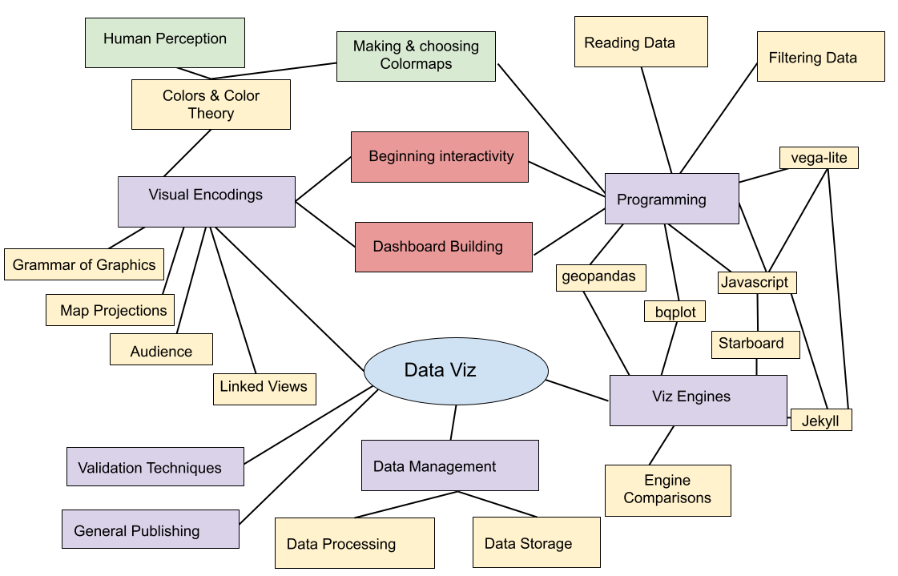
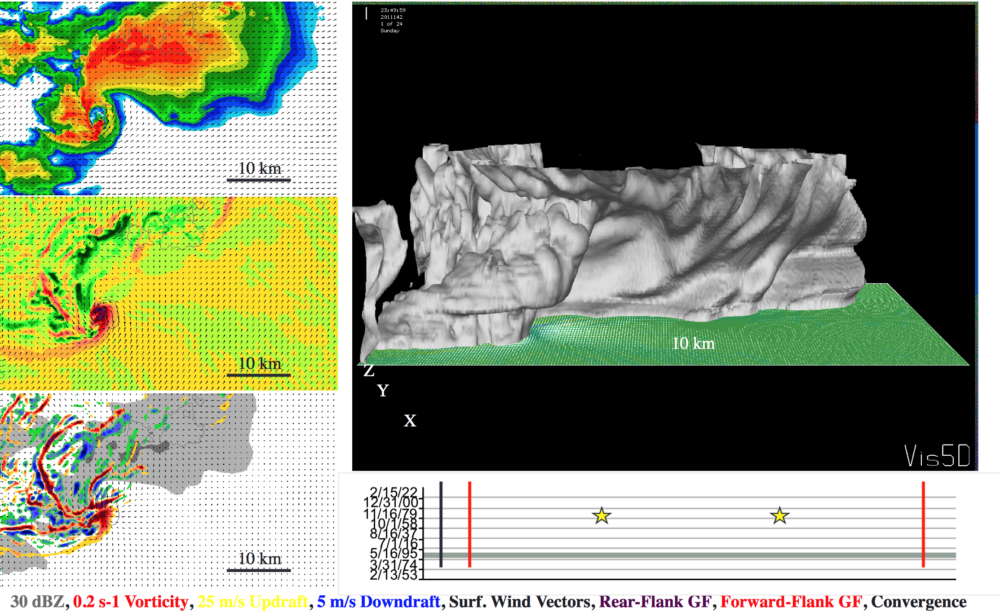

notes:

notes: this week we will discuss how one has to consider the audience of their visualization - is your audience you? your peers? others?
we’ll start linking stuff together in vegalite
if we have time after doing a few more things with javascript & vega-lite, we’ll start in on doing a few things with Jekyll
vega-lite - transformations and calculationsnote: we will probably not get to Jekyll until next week or week after – thanks for all of your installation efforts!
There are no rules!
_crazy-laughing-in-front-of-fire-bobs-burger-tina-belcher-dan-mintz-maniac-psycho-mad-scientist-muahaha-evil-flame-hell-l.gif)
notes: Labels don’t matter. Colors don’t have to look nice. Interactivity doesn’t have to be fast. Here we are just trying to get something on screen that represents the data. Often this is challenge enough.
As the designer, you know what choices you have made, so “elegant design” isn’t a huge deal - although don’t go too crazy or you could make things more confusing for yourself.

notes: This is an example from AJ (the in-person instructor). He uses 3D software like Houdini in his “everyday” life and so this is his software of choice. Here, he used 3D software to make a 2D plot, and arranged points to look like a bar chart even though they were rendered as individual points - aka a scatter plot.
It just had to work, and we used the most convenient software.

notes: Here are some examples from my work
There are plots of data from a large scale simulation of the universe. Here, I’m curious about how the average number of elements heavier than helium in our simulation changes over time.
name of: L25n512TNG_shenplot_STARS_ylimn0p5_bins_largeEu_1e2_nx050_ny050_sn099.png

notes: You can even tell from the name of the file (which runs off the page here) that I’m playing with a bunch of things. For example I’m plotting here stars, but there is no way you’d really get that from the actual plot itself.
These are plots that show an example of how one might “explore” the data - look for relationships.
Later this became (viz for peers)

Paper if you’re really curious
notes: later, that plot became this plot right here which can be thought of as viz-for peers
While its probably not something that you all understand (unless there are some astronomers in our midst) - you can see I’m more careful here about fonts, presentatin, color schemes and actually labeling things
Let’s talk about exploration.
Example: A banking database where each record is a bank transaction and the fields include date, deposit or withdrawal amount, customer id, and the interest rate of the account.
notes: some questions you want to be asking while you are exploring your data with the intent to visualize it
in these examples – what do you think are some interesting things to visualize? what information would a consumer of your viz need to know?
Let’s talk about exploration.
Example: A spreadsheet of experimental crop growth measurements where each record is a measurement, and the fields include date, plant species, plant id number, number of leaves, plant height, number of internodes, and average leaf length.
notes: internodes = the number of “generations” of a plant, aka how many branches come off the main stem.
in these examples – what do you think are some interesting things to visualize? what information would a consumer of your viz need to know?
Let’s talk about exploration.
Example: A computational simulation of a galaxy where each record is a timestep in the evolution of the 3D grid, and the fields include time, X position, Y position, Z position, gas density, gas temperature, gas metallicity, and number of stars.
notes: in these examples – what do you think are some interesting things to visualize? what information would a consumer of your viz need to know?
What do you want to get out of visualization for yourself?
notes: shortcut ideas … subsampling, delete unused fields, use a simpler tool, manually select outliers by hand instead of doing it procedurally
forget labels that others have to figure out
don’t worry about color schemee
To design a visualization for experts, you need to analyze how they process information.

notes: Here’s a series of visualizations made by or for domain experts that AJ just had lying around on his laptop.
What are some things you notice they have in common?

notes: Here’s a series of visualizations made by or for domain experts that I just had lying around on my laptop.
What are some things you notice they have in common?

notes: Here’s a series of visualizations made by or for domain experts that I just had lying around on my laptop.
What are some things you notice they have in common?

notes: Here’s a series of visualizations made by or for domain experts that I just had lying around on my laptop.
What are some things you notice they have in common?

notes: Here’s a series of visualizations made by or for domain experts that I just had lying around on my laptop.
What are some things you notice they have in common?
Experts often want to interrogate the data themselves.
How can they do that?
notes: ask students - other ideas? what about interactivity? (Interactivity needs to be decent)
Experts are looking to isolate variables to make scientific conclusions.
How can we make visualizations more analytical?
notes: ask students - other ideas? What about animated data?
This is what you’re most accustomed to, because usually YOU are the public.

notes: Who here is an expert on the historical accuracy of movies? Do you think this visualization was created for those experts? Or was it created for you? How can you tell?
Jaret before and after from Alan Alda Center on Vimeo.
notes: so here is an example of a scientist and, in a typical scientist fashion, using a lot of jargon
but then after taking some improv he’s able to communicate more effectively to the public
Definition: Special words or expressions that are used by a particular profession or group and are difficult for others to understand.

notes: When working with experts on their data, they will often try to use words that are specific to their field. As a data communicator, it’s your job to decipher that jargon and make it more approachable to the public.

notes: This XKCD webcomic makes fun of how much jargon scientists use. He tries to explain NASA’s Saturn V rocket using only the 1000 most common words in the English language.
He actually wrote a whole book about science this way called “Thing Explainer.”
notes: And here’s a neat tool he created to help you write your own!
Before: “The Advanced Visualization Lab creates cinematic treatments of supercomputer data for immersive displays.”
After: “The very good picture making team creates movies of huge computer information for screens you can be inside of.”
Let’s just get it out there: humans don’t respond to data. They respond to stories.
Which of these do you care about more?
notes: In visualization, we really want to tell a story, not just a list of facts.
plug for data storytelling class!
Why is that?

notes: Emotional response to storytelling is an evolutionary trait humans developed to form stronger social bonds and learn from each other’s experience.
Freytag’s Pyramid

notes: A story needs setup, conflict, and resolution. One thing many novice storytellers forget is to have a resolution or ending. You need to wrap it up in a neat package!
aside - “denouement” is one of my favorite words
Characters and Conflict
notes: each story is going to have different sorts of characters and different kinds of conflicts
here are a few examples - you can even make scientific data into a story! Don’t you really want to root for the photons to make it out of the sun?
notes: so, we won’t watch this whole thing, but it is worth checking out how the jargon/language changes when he’s talking to different groups of folks
What do you know about them?
notes: You can hone your narrative for certain audiences. If it’s the broadest audience, like for journalism shared online, you need to keep in mind that there will be children, grandparents, experts, politicians, people with money, etc all in the audience.
Images can be more powerful than words, text, and numbers. Images can tell stories.

notes: What can you say about this event given the picture? How is this different from an average day on the National Mall in DC?
What is the story of this photograph?
notice that you need the CONTEXT of US history to “get” this story however
Context is vital for the public.
notes: This is different from a visualization for Experts where you usually want to isolate the dataset.
With experts, you can asssume some background of understanding. You might start a presentation or paper with a background summary, but based on the field you don’t have to explain as much. For example, if I’m giving a astronomy talk, I can assume folks know the difference between newtonian gravity and general relativistc treatments and roughly when each apply (GR for going fast, or near big things).
Context is vital for the public.

notes: The AVL created this sequence for a movie, which originally moved much slower on a large screen, and had a narrator explaining the sequence. Someone recaptured it and made it into a gif, sharing it on reddit with the caption “A simulation of the Earth’s moon being formed.”
What context might have been lost?
How well does the imagery speak for itself?
Identifying the narrative
notes: In visualization for the public, typically we will start with a dataset, and then build a narrative around it, and seek out more data to build context.
Data narrative = what the data collector is researching
Public narrative = what makes an interesting story and provides context
This is different than viz for experts where you are typically talking about the dataset you have been working with specifically.
notes: What are the narratives of these visualizations? How are they different than just a list of facts?
There are three components, turned in the last three weeks of class.
You will have three components:
Be aware:
note: there are NO extensions available – you can’t use one of your three HW extensions for these components
Submit in a Jupyter notebook.
note: this will be the overview in general if you are doing an individual submission, for group we’ll look at the requirements in a moment on the Canvas page
Your datasets need to be submitted as well. To do this, include this information in your Jupyter notebook:
Be aware: You must make a plan for large datasets (larger than GitHub’s upload limits).
You can share raw data sets and sources, ask questions about reading/modifying the dataset and post code to do so that isn’t working.
Please do not share processed or cleaned datasets online.
Submit in a Jupyter notebook.
Be aware:
See Assignment description for more details.
note: This part of the project will be like Homework #6 (which we know is a toughy!) – if you didn’t do well on Homework #6 and want to walk through how to approach this problem feel free to pop by office hours (mine or the TA’s) and we’ll walk you through it (any office hours should do, we all have the solutions :D )
Visualization for the public – see Assignment description for more details.
You will submit this as your final project and get some feedback – both from the instructors and in the forum from your peers.
You will also provide feedback for 3 other students/groups (more on this later).
You will submit a link to a github pages site or other webpage constructed in Javascript+HTML that you/your group has constructed.
This component will include a “for others” visualization that is deeply narrative with appropriate interactive (or static) content which is sharable on a website.
Some possible ways to approach this:
vega-liteVega-lite - II
Recall that vega-lite is defined in a JSON specification. This specification will typically take a form similar to this:
{
"data": .. ,
"transform": [ .. ],
"mark": .. ,
"selection": .. ,
"encoding": .. ,
"config": ..
}
We principally used a vega-lite “embed” mechanism:
var embedded = vegaEmbed('#vis', yourVlSpec);
We are also able to specify a configuration variable to this at the config
option. (Details) You may find it
useful to update the actions option in opt, which controls which items are
available in the menu:
var embedded = vegaEmbed('#vis', yourVlSpec, {'actions': false});
The object returned by vegaEmbed is a
Promise.
This means that when you access it, it may not yet be available – so instead
of actually calling on it, we supply a function to be called at some point
when it is ready – when the promise has been resolved. This function will
be called with that object.
somePromiseObject.then( function(resolvedObject) {
resolvedObject.doSomething();
});
(This type of syntax, for deferring actions to the future, is very common in Javascript.)
Last week we discussed marks and encodings.
This week we will continue with marks, adding on transformations and selections.
vega-lite has numerous different mark types. We can break these down by the type of data they can represent. We will only consider “primitive” marks today.
area & linebar & rectpoint & circle & squarerule & texttickgeoshapeWe will demonstrate several of these using our datasets, but first we need to learn how to transform data.
At the view-level of your definition, you can specify transformations that modify, filter, or reshape the data.
At the top level, we specify a transformation. We can transform data within a given dataset (by specifying a new attribute of each data point) or by reshaping the data.
The types of transformations we will cover today are filter and calculate.
We apply a filter transform by specifying the field to filter on and the filtering characteristic. This can be a selection, an expression, or a logical definition. We will address selection and expression filtering later.
A logical filtering operation might look like one of these:
"transform": [
{"filter": {
"field": "eye_color", "oneOf": ["blue", "brown"]
}
},
{"filter": {"field": "age", "lte": 100 }
}
]
We can use lt, gt, lte, gte, eq, oneOf, range and valid.
We can also compute a new field using the calculate transform. This is an expression that is evaluated on every data point, which is supplied as the variable datum to the expression.
"transform": [
{"calculate": "datum.age / 7", "as": "dog_years"}
]
Selections are defined with names – this seems to be the most common stumbling block. You get to choose the name!
We use selections in one of a few ways.
There are three types of selections:
single – selecting a single point,multi – multiple pointsinterval – collections of values along encoding axesWe will focus on the interval selection.
We can define a box-based selector that operates along the x axis by specifying which encoding it is linked to. Here, we name it valrange, but we can choose whatever name we like.
"selection": {
"valrange": {"type": "interval",
"encodings": ["x"]
}
}
Let’s try this.